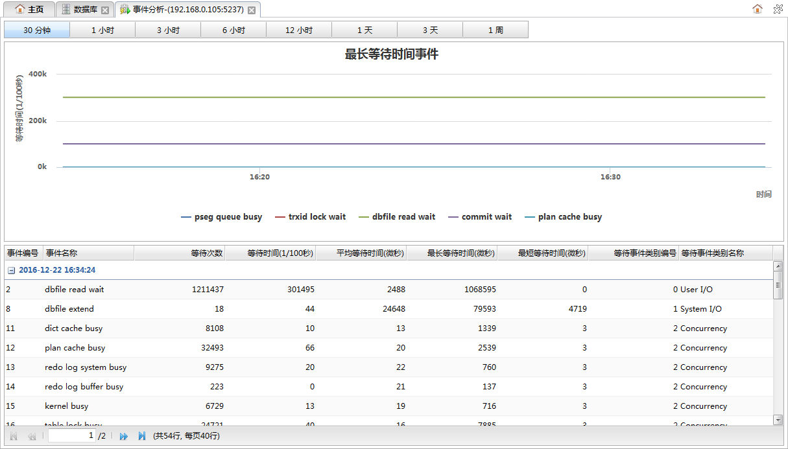

从数据库监控面板中的数据库列表的操作下拉菜单中点击事件分析可以打开事件分析面板，该页面用于查看最近一段时间内数据库实例事件等待情况。如下图所示:

时间按钮
点击按钮可以切换查看最近各个不同时间段内的事件的等待情况。
事件等待时间图表
图表中显示的是最长等待时间排名前5的五种事件类型的曲线图。横坐标是时间，纵坐标是等待时间，单位1/100秒。
事件等待信息列表
列表中为当前所选时间段内的事件等待信息。列表中的记录按日期分组显示。
| 字段 | 说明 |
|---|---|
| 事件编号 | 事件的编号。 |
| 事件名称 | 事件的名称。 |
| 等待次数 | 事件已等待次数。 |
| 等待时间 | 最近一次等待时间，单位1/100秒。 |
| 平均等待时间 | 平均等待时间，单位微秒。 |
| 最长等待时间 | 最长等待时间，单位微秒。 |
| 最短等待时间 | 最短等待时间，单位微秒。 |
| 等待事件类型编号 | 所等待的事件的类型编号。 |
| 等待事件类型名称 | 所等待的时间的类型名称。 |